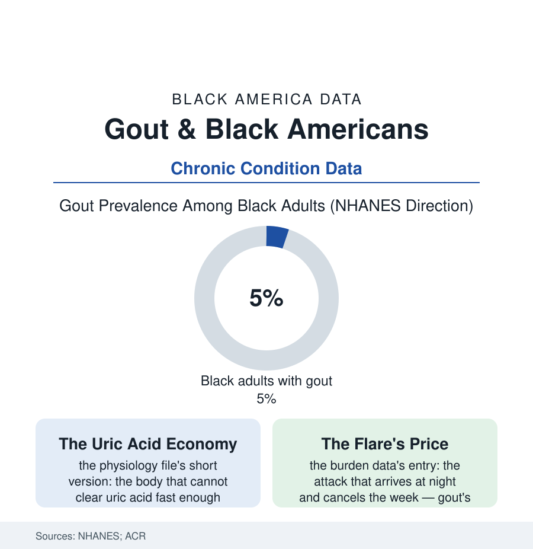

Black Public Health
Gout: The Misnamed Disease in the Modern Data
Gout was caricatured as the rich man's indulgence. The modern data place it in the kidney file, the soda file, and the Black community's joints at rising rates. The gout file.

Gout carries the worst branding in the disease catalog: three centuries of cartoons about port and gluttony attached to what the modern data describe as a kidney-and-metabolism condition of ordinary people. Its prevalence has climbed across the NHANES decades, Black adults' rates run above the national figure, and its management repeats this section's familiar pattern in miniature. This article reads the gout file.
The Physiology Nobody Chose
The mechanism is a plumbing problem: uric acid, the waste product of purine metabolism, is cleared two-thirds by the kidney — and where clearance falters (the kidney file's declining filtration, the diuretics of the hypertension file's prescriptions, the genetic transporter variants whose frequencies differ by ancestry in the genomic data), the acid crystallizes in the joints, and the immune system's response to the crystals is the famous flare. The diet's contribution is real but resized by the modern cohort studies: the purine-rich foods and the alcohol of the caricature matter at the margins, while the fructose rows of the soda file (the sugar-sweetened beverages' uric-acid effect among the diet literature's more replicable findings — the sweet tea and soda geography writing itself into the joints) and obesity's metabolic arithmetic carry the larger shares. The demographic result in the surveys: gout prevalence among Black adults measured around five percent and climbing, the age of onset younger in the Black rows of the cohort data, the condition's companions — hypertension, kidney disease, diabetes, the metabolic file whole — concentrating in the same bodies at the same addresses, gout functioning less as a lifestyle verdict than as the metabolic syndrome's most painful herald. The sex data keep their own pattern (the men's rates triple the women's until menopause narrows it), and the severity rows — the tophi, the joint destruction of the untreated years — sit in the rheumatology registries where the late-presenting patients accumulate.
The Management Gap in Miniature
The flare's triggers tie the file back to the working body: dehydration and exertion precipitate attacks in the clinical data — the grounds crew's August, the warehouse's summer, the athlete's tournament weekend — the labor files' conditions arriving, as so often in this section, as a diagnosis's precipitating footnote. And the historical record carries its quiet irony: the disease of kings appears in the plantation-era medical literature almost not at all among the enslaved, whose rations the same literature itemized — the caricature's class geography confirmed by the archive it never consulted, the condition's modern address in the food environment's plenty-by-processing rather than the feast's plenty at all.
Gout's treatment is, by this section's standards, a solved problem being unevenly delivered: the urate-lowering therapy (allopurinol, in the pharmacopoeia since the 1960s, costing pennies) titrated to a published target prevents the flares and dissolves the crystals — and the claims data record the familiar failure modes (the drug prescribed at a fixed low dose and never titrated in the majority of the primary-care courses the audits examine, the target level never checked, the patient counseled on diet alone through flare after flare, the rheumatology referral arriving after the joint damage). The racial rows of those audits run as this atlas predicts — Black gout patients less likely to receive the urate-lowering therapy at guideline quality in the Medicare analyses, more likely to meet the system in the emergency department at 2 a.m. in the flare's extremity (the ED data's gout rows a small, perfect diagram of the access file: a controllable chronic disease presenting as a recurring emergency in the patients whose regular care is thinnest). The genetic footnote has its equity edge as well: the severe-reaction risk variant for allopurinol (HLA-B*58:01) concentrated in Asian and, at lower frequency, African ancestries — the guidelines' testing recommendations navigating, once again, the question of whose genome the standard protocol assumed. The file's forward rows are the treat-to-target campaigns' early data and the primary-care quality measures' adoption — gout being, for the reformer, the ideal demonstration case: cheap drug, clear target, measurable outcome, and a gap that therefore admits no alibi.
Reading the Gout Data
The gout file retires a caricature with data: not the rich man's reward but the working kidney's report card, graded hardest in the communities carrying the heaviest metabolic load. The surveys count the flares. The pharmacy data count the untitrated prescriptions. Between the two numbers lies the distance between a solved problem and a delivered one — this section's whole argument, in a single swollen joint.
More in Black Public Health
Hypertension Among Black Adults: Prevalence, Control, and Consequences
About 55 percent of Black adults have hypertension — the highest rate of any U.S. group. Prevalence, onset, control, and the stroke, heart, and kidney consequences in the data.
Diabetes Among Black Adults: Prevalence and Complications
Nearly one in five Black adults has diabetes, diagnosed or undiagnosed — and its complications fall with particular weight. The CDC data on prevalence, control, and outcomes.
Black Life Expectancy: The Gap at Birth and Its Causes
Black life expectancy at birth is about 73 years, roughly five years below the national figure — the summary measure of every health gap in this section. The CDC data.
Source: National Health and Nutrition Examination Survey (NHANES); American College of Rheumatology; Arthritis & Rheumatology journal data; Centers for Disease Control and Prevention.